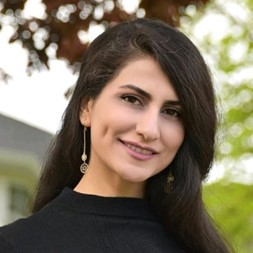
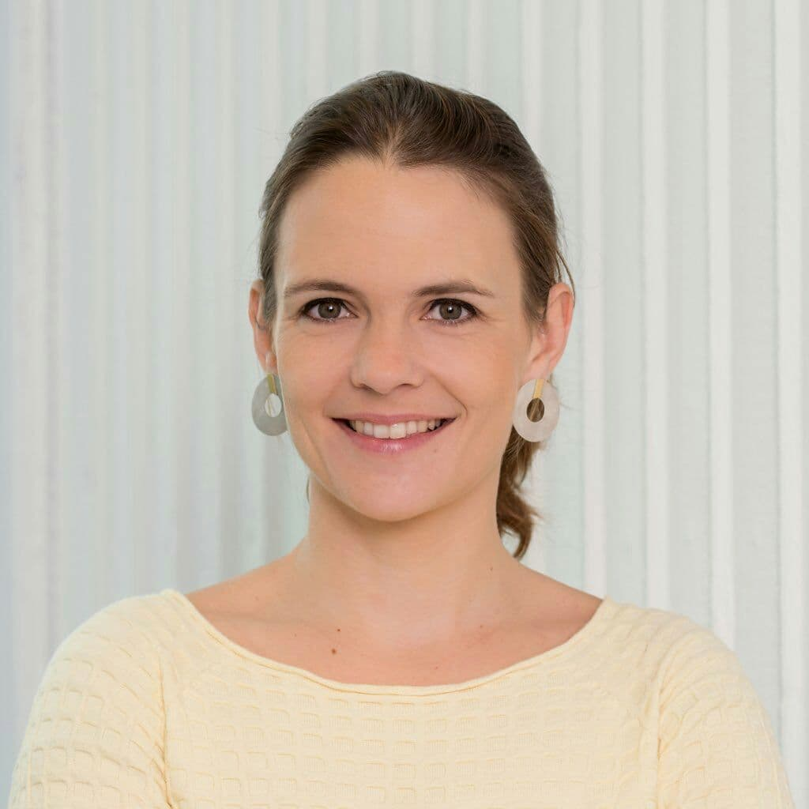
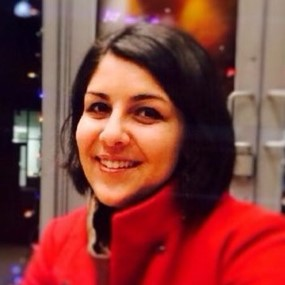

During the panel, moderator Parvin Mousavi will discuss future research topics as well as the impact of the pandemic on research with renowned guests.
Parvin Mousavi
Moderator
Professor at Queen’s University (CA)
Alice Santilli
Co Moderator
MSc Student at Queen’s University (CA)

Shekoofeh Azizi
AI Researcher at Google
Purang Abolmaesumi
Professor of Medical Imaging, Image Guided Therapy and Applied Machine Learning at UBC
David Pichora
President & CEO Kingston Health Sciences Centre

Lena Maier-Hein
Professor of Computer-assisted Medical Interventions at DKFZ

Hedyeh Rafii-Tari
Principal Research Scientist at Johnson & Johnson